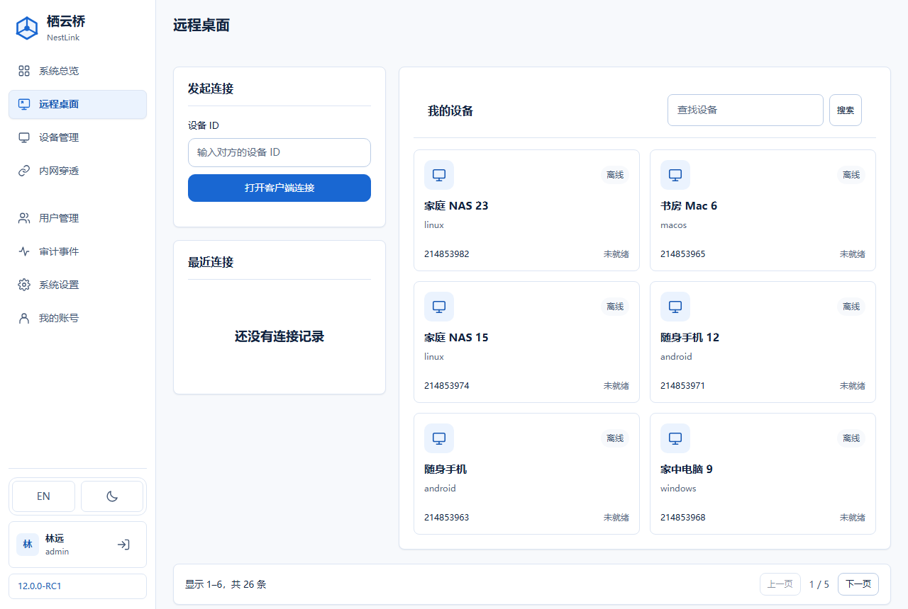

NestLink 12 · 候选版
回到家里的设备，
保持直接连接。
一个清晰的蓝白工作台，连接设备，也让家里的服务保持在线。登录自己的服务器后即可使用远控与穿透。Windows、macOS、Linux 与 Android 使用同一品牌和操作习惯。12.0.0-RC1 为候选版。
严格 P2P
远控会话直接连接两端。
Rust/Flutter 原生核心要求认证、加密、直连。hbbs 只提供 ID 与 NAT 信令；没有 hbbr、TURN、FRP、HTTP/WSS、VPN 或厂商回退。无法建立安全直连时明确停止。
栖云桥 Web 管理台通过只含 ID 的 homedesk URL 打开已安装客户端。同账号目录不会绕过被控端密码或批准；近期登记不代表媒体在线。
按你的意愿共享屏幕。
填写自建服务地址和账号登录，连接配置自动获取。通用包没有内置服务器、密钥或账号。Android 共享屏幕要同意系统提示，Android 14/15 从可见应用重新授权。
FRP 0.70.1
家里的服务继续在线。
HTTP/HTTPS、受控 TCP/UDP、端口池、权限、ACL、流量配额、诊断与独立 CLI/NAS/background Agent 全部保留。远控模式切换或连接失败不会停止独立隧道。
Server 保持 Node/SQLite 与 Caddy、traffic-gateway、FRPS，远控会话与后台穿透分别管理生命周期。GUI 提供 Windows x64 安装器、macOS 双架构安装包与 Linux x64/ARM64 DEB；CLI/Agent 合集覆盖现有五个平台。
栖云桥 12.0.0-RC1 · Web 工作台

图示与历史界面预览
以下产品截图保留 10.0.0 标签，不代表 12.x 界面或验收。


等待实际产品截图
选择下载通道。
稳定通道仍为 Server / Client 10.1.0 + Android 10.0.0；NestLink 12 只进入候选通道。跨网与真机验收尚未完成。部分验收项目未运行，验证尚未完成。
安装前了解这些
远控会回退中继吗？
不会。NestLink 12 要求认证加密的 P2P，打洞失败即停止。
内网穿透还能使用吗？
完整保留 HTTP/HTTPS、受控 TCP/UDP、权限、端口池、ACL 与流量治理；长期服务使用独立 CLI/Agent。
候选验证了哪些内容？
源码、单元、控件、构建、安装器和模拟器检查各有范围。持续两端媒体、跨网 NAT 和 Android 真机待验收；10.0.0、9.0.0 历史结果不作为 12.x 通过证据。
升级前备份什么？
SQLite、部署 secrets、客户端状态与独立 hbbs 身份卷；退出旧远控覆盖配置后再迁移。